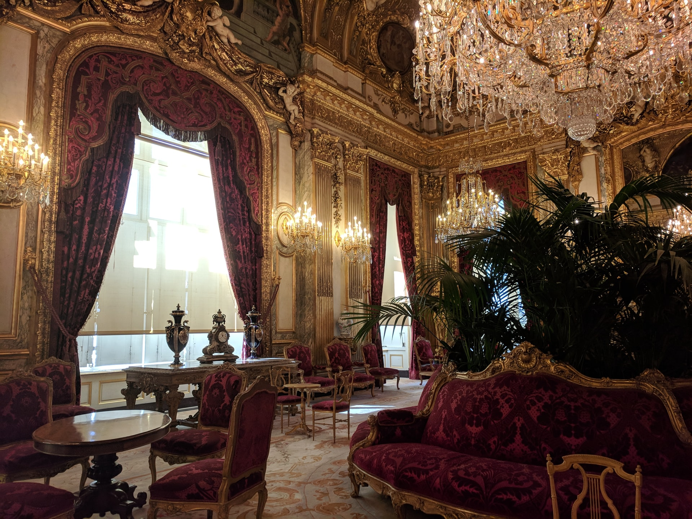

![]()

Leaving academia is rarely a simple or unemotional decision, no matter what career stage you are at, no matter where you’re headed to next, or whether you’re leaving by choice. In ways that are both good and bad, the academic life is quite different to working in industry, so you are necessarily taking a jump into the unknown. I don’t believe anyone can make those kinds of changes without experiencing fear, and I think anyone who attempts a transition of this kind deserves support in their choice.
I made the jump this year, in 2022, effectively ending an academic career that began when I started my PhD in 1999. I’ve been in my new role for almost three months now, long enough to have a few thoughts about my new world. It’s also been long enough that friends and twitter followers have been asking if I could share my experiences. I’ve spoken to a few people privately, but sometimes it helps to put thoughts into writing.
With that in mind, this post is my attempt to provide a little love, support, and maybe even help to others who are in a similar situation to the one I was in. It’s intended as both a personal and practical comment: I’ll mix some practical suggestions with thoughts on the emotional and psychological aspects to the transition.
Do the reading, but like… just one book?
I’ll start with some practical advice, which is that it helps to do some background reading about the kind of career you’re looking at (I know, shocking, right?) If you’re reading my blog post specifically, there’s a pretty good chance that you’re thinking about a career in the tech sector, and probably in data science specifically. This makes a lot of sense for you. You already have most of the core skills required to be a data scientist. You can code, you can analyse data, you can communicate well. You can manage projects, you can work in teams and individually, you’ve probably had experience managing and supervising junior scientists and analysts.
What you don’t have is industry experience. You aren’t quite sure what that world is going to be like and exactly how to recast the skills you have in language that folks over in industry land will understand. What you need is a book that helps you understand the lay of the land, and I am absolutely not going to write that book. What I am going to do instead, is mention that Emily Robinson and Jacqueline Nolis already did. Their book is called Build a Career in Data Science and it’s very good. It’s the book I used to help me out, and instead of repeating their advice I will simply recommend it to you.
If you really want to I guess you could read more, but the whole concept of “doing all the reading” is one of those things you can let go of. Even if you find a different book, just read one book okay? You’re even allowed to skim. Be honest: that’s what you were doing already, just like everyone else in academia.
The only note of caution I would add, if you’re an established academic looking to make the jump, is that academic folks like us aren’t the primary audience for the book. It’s a more general book and doesn’t talk much (or at all) about the peculiarities associated with the academia-to-industry transition. You’ll need to do a little bit of translation to make it applicable to you. That’s okay though, because you’re very good at this kind of mental athletics: academia has trained you for it! Still, when chatting with Emily and Jacqueline in order to say thanks for their book, I did mention that I wished someone had written a translated version of the book for academics looking to get out.
No, I’m not going to write that book either. As a consolation prize you get this blog post.
Abandon “prestige”, ye that enter here
Pivoting now from the practical to the psychological, there’s an elephant in the room we have to talk about up front.
If you have been in academia long enough you will have an internalised a core concept that you need to abandon: prestige. Academia runs on prestige, and everyone on the inside understands in our bones how important this particular currency is. Where you publish, where you study, who you work with, what “tier” your institution belongs to… these are all prestige factors. They are of course utterly irrelevant to your value as a human being or your skills as an employee, and yet in many ways they are more important to your career success than oh, say… the actual work you do. Not for nothing do we joke that the fundamental dogma of academia is “Nothing in academia makes sense except in light of prestige”. Prestige is the reason I published a disproportionate number of my papers in Psychological Review. It’s the reason I would accidentally-on-purpose let “slip” that I was on the editorial board at Science when I needed to impress someone quickly. Prestige. It matters.
Except, no-one outside the academy cares. Not even a little bit. The peculiar currency of academia has no meaning in the outside world. That’s sad, but I have good news:
In industry they use money as currency instead.
It’s a frighteningly novel concept for an institutionalised academic, but one you might come to love, so I’ll unpack it a bit further. Because it doesn’t mean you’ll necessarily be paid more (though you might). Rather, what it means is that it is you are performing a service in exchange for money. The company buys your time and your work; it doesn’t buy your soul. Not only that, a good company understands this, and would never dream of trying to take it away from you. You don’t have to personalise the work any more. You don’t have to hold it dear to your heart as if your employment contract were proof of your value as a person. That concept of “prestige” you’re secretly holding onto? That’s one of those mechanisms by which academia ties your sense of self-worth to little “badges” of achievement and doesn’t even pay you for the extra work you put in to earn them. How much work have you given away for free, to third parties who make a profit of your work? For no reason other than “prestige”?
You can let that all go now. It will hurt to let it go, because – so much more than your junior colleagues who got out when they were young – you have become invested in it and the hooks are laid much deeper in your psyche. But you can, and it’s surprisingly liberating when it happens.

Your résumé is an advertisement for you
Let’s return to practicalities. From the moment we enter the system, there is a piece of advice we’re given in academia: keep track of everything. Every talk, every paper, every book, every prize, every award, every compliment from student. All these things must be stored, collated, reused, organised, and used. They are the evidence we use for our promotion applications, our grant applications, our various pleas and supplications to the dark gods of the ivory tower. And so it is that every academic CV becomes a monstrosity, a log file listing every activity from which value can be extracted. It is time to let that all go. Breathe, darling.
The vast, vast majority of your CV is not necessary any longer, because the fundamental purpose of the résumé has changed. It is not a testament to your worth. It is not a log of your achievements. It is not in any meaningful sense documentation, and it is certainly not a store of value. It is an advertisement that you place with a company, to catch their attention: your résumé is a flyer, not a monograph.
If you are at all like me this is a very hard concept to get used to. Frantic, I would ask myself how I could possibly reduce all my self-worth and my value to the company to a mere page? It simply cannot be done! … and of course it can’t. That’s not the task at hand. Your CV bears no relationship to your value as a person, and its only function is to convince the right company to give you an interview. Here’s how I did that.
Step 1: Reduce the size
In an act of personal catharsis I destroyed most of the evidence that I was ever a fully institutionalised academic, so I no longer own any of my old “proper” academic CVs, but you don’t have to look too hard to discover evidence that I used to have one: Behold the list of my publications and despair, tremble before my h-index1, and embrace the visual horror of my ORCID profile! As you can probably guess, once upon a time I had a document that included all these things, tracked all the journal impact factors associated with every publication, listed every grant, every research contract, every… oh, you know. You have one of these too. It’s probably 50 pages long or something.
Your first task is to strip that back to two pages. You don’t have to reformat it at all. It’s still an academic CV. What I’m asking you to do in this first step is to find a way of condensing the things you actually care about in academia into a manageable format. You don’t have to think like an industry person at all yet. Just imagine a crazy world in which academics didn’t have to write monographs just to get permission to use the bloody bathroom, and choose two pages worth of content that you love. To make it a little easier, this is how I butchered my career and turned it into a scandalously brief two page résumé.2
The point of this initial exercise is prioritisation: you have things you are proud of, things you know are major accomplishments, and things that you feel obligated to list because you “have to”. This is your chance to let go, and keep only those things that you believe are genuinely good. Plus, you can keep this version as a nice summary of your academic accomplishments that someone will actually read. Because no-one is going to read that 50-page horror babe. They won’t.3
Okay, done? Awesome. You’re doing amazing.
Step 2: Write a sales pitch
A little controversially, I’m gonna suggest that step 2 should be to write some prose. An industry résumé absolutely does not contain prose, but the purpose of this step is to try to help you cope with the shift that will have to happen in step 3. What we’re going to do in step 2 is pick and choose some content from the “step 1 résumé” and rewrite it as a verbal argument for why you personally deserve to have an industry job (if it helps, try to find a specific job on linkedin or whatever that you actually want, and write for that job). Again, this is a terrible way to write industry CV, but… you’ve written grant applications before right? Lots of grant applications. You’re depressingly good at writing those. We’re going to repurpose that skill set, and write a verbose résumé that looks like a mini grant application advertising you.4
Now, anyone who has a good grasp of how industry works knows perfectly well this is no good. An industry résumé should be extremely light on text, it should focus on skills, and it should be structured in a way that makes machine parsing easy. When I wrote this I was still thinking like an academic. It isn’t a good résumé at all. So why am I mentioning it at all?
The reason is that most academics I know really struggle to make sales pitches, except in the specific contexts where we are “expected” to do so, and one of those contexts is writing grant applications. Writing my résumé in a way that felt familiar from the grant writing context helped me shed a lot of my anguish about the résumé, because “it’s like writing a grant, and everyone knows that grant-writing is mostly an exercise in sales…”
Step 3: Now you can write a résumé!
Once I’d finally gotten to that point, and was comfortable viewing the whole job search process this way, it became a lot easier for me to accept that a résumé is not in any way a meaningful representation of my skills, my history, or my ability. It is simply an advertisement that follows a predictable format. So for step 3, I discarded all my pretty words and wrote an industry-style résumé.5 As you can see, this is a quite different style of document. It’s written almost entirely as dot point lists, it focuses as much on skills as on accomplishments, and there is a lot of white space. Generally, that’s what you want.
When you get to this point, one thing I’d strongly recommend – not that I am ever to be relied upon for good advice – is that you think not just about the jobs you can get but the kind of work you want to be doing and the person you want to be. I’ve forgotten where I heard this (it’s definitely not an original thought of mine) but because the résumé is the first point of contact with the company in many cases, it’s also an exercise in expectation management. You are implicitly telling a story in this résumé about a particular type of person, and if you get an interview then people will expect that person in the interview. If you get the job from that interview, then they’ll expect the person from the interview to show up on the job.
So, who do you want to be in your new job? Maybe you don’t want to be the same person you’ve been all your academic life. Maybe you want to be someone new. If so, it’s totally fine to emphasise skills and accomplishments that relate to that person. You’re allowed to reinvent yourself a little bit in your résumé. It’s part of the healing process!

The tech sector job market: less like Bridgerton, more like Grindr
Going on the job market was incredibly stressful, unfamiliar, and took longer for me to be successful than you’d think if all you’ve seen of my process is what was visible on public twitter (by the time I was openly on the job market I’d already had a number of unsuccessful attempts), so I’ll talk a bit about that too.
Applying to industry jobs is a little different to applying to academic jobs. For junior academics, applying for positions is often a numbers game: finding that first academic appointment involves a lot of applications, a lot of rejections, and a lot of anxiety. For senior academics, however, the process is different. There’s not really a “job market” in the traditional sense, just a loose network of relationships that you can use to “put out feelers” and surreptitiously negotiate a move if a mutually agreeable arrangement is possible. In many ways it is a courtship, involving many trips, back and forths, and evolves over a long time frame, and eventually culminates in a proposal of marriage (or tenured professorship).
Applying for jobs at tech companies wasn’t like that at all for me. I’d search for positions advertised on linkedin, or through twitter, and asked friends if they knew who was hiring. In my case it helped a lot that (a) I have a large twitter following and that (b) by late 2021 I knew I was not prepared to stay in academia for another year, which is what allowed me to publicly announce that I was on the job market. That strategy worked really well for me and generated a lot of leads.
Often people would offer to list me as an “internal recommendation” for a position, which is something I didn’t know anything about, but is quite similar to what you’d expect from academia except slightly more formalised: if someone inside the organisation recommends you for a role it makes you a more visible and more valuable candidate, and helps set you apart from the large number of other candidates. It’s useful, but not required in order to get a position (e.g., I wasn’t an internal recommendation at one of the two companies that were on my final short list).
The process at most companies went like this: I submitted my résumé and I never heard back from them. The end. That seems to be how it goes and it doesn’t mean anything. The best analogy for the whole process I came up with was thinking of it like dating apps. Submitting a résumé isn’t any more meaningful than “swiping right” on the company. They might swipe back, in which case you could end up in a chat with a recruiter. But they probably won’t, and that says absolutely nothing about you. It’s just a really big marketplace filled with incredibly noisy signals.
I have no idea how many jobs I applied for any more than I know how many men I’ve liked on a dating app. Companies, like men, are everywhere, and there is little to be gained by trying to keep track of all of them.
What I do know is that I started the “initial conversation” with 11 different companies during my job search. The initial conversation is itself an informal interview (usually with a recruiter) and it goes both ways – you’re screening the company just as much as they’re screening you. You may or may not go to the “real” interview stage after that: for me, I reached the interview stage with 5 of the 11 companies I’d started conversations with. The interview process was different at every company, but most of them weren’t a single interview but rather a series of interviews with different people. Sometimes there were “skills tests” to take (seriously, this is a thing), other times there were not. It was quite different to what I expected from academia, and it took a few failed attempts before I worked out the basics of how to interview.
Eventually I ended up with offers from two different companies, I negotiated briefly,6 and then chose to accept an offer.
Learning to love job mobility
Folks inside academia have asked me about what life is like on the other side, and it’s hard to know how to answer. I know what my position is like, but that doesn’t say a lot about what life is like for anyone else in industry. It’s a big world out there and there’s a lot more variability in industry jobs than there are in academic jobs. Some are wonderful and others are terrible. Luckily for me I landed well and I genuinely love my current job, but not everyone does. In that respect, academia and industry are similar.
However, one thing that everyone who has made the jump notices immediately is that mobility is so much higher in industry. This makes a huge difference to your quality of life. In academia, if you find yourself hired into a bad department you are in a lot of trouble: it’s so hard to move between academic jobs that one toxic department can ruin an entire career. Industry is different: if you have a bad job you can make a plan to leave, and be happily working somewhere new within six months.
Once you’ve been in the sector for a while and are no longer carrying the albatross of “I’m just an academic and falsely believe I have no skills” around your neck, you discover that moving jobs is a thing people do all the time. Sometimes they do it for more money, sometimes they do it to get away from a bad situation (it happens everywhere), but often they move jobs just because they want to do something different. And that’s okay.
Welcome! We have tiny cakes!
Yes yes, Danielle, that’s nice and I take your point about variability and job mobility but what’s your job actually like? Are you happy? What do you do all day in industry? Do you have a boss who runs around telling you what to do all the time? Is it like Office Space? You look so much like Jennifer Aniston, do you have to wear 37 pieces of flair?
Like a lot of people with professional roles, my actual job is pretty varied on a day to day basis and I have quite a lot of autonomy in this role. Some days I write code contributing to Apache Arrow. Other days I write blog posts. Sometimes I spend time on twitter talking with R developers, because actually that’s part of what I do these days! Now that I’m wrapping my head around how Arrow works I’m at the point that I can start giving talks and workshops. I sometimes create resources that make it easier for folks inside and outside the company to use Arrow. I contribute where I can, I work with lovely people who help me learn the parts of the job that are foreign to me, and I even get to make use of my visual design skills from time to time. The company pays me fairly for my time, doesn’t subject me to the humiliating rituals of the academy, and I don’t have to deal with academic transphobia anymore. It’s lovely.
So yes, I’m happy here.
Footnotes
Yeah, I’m currently dating an obnoxiously competent computational biologist, and her citation count for last year is perilously close to doubling my citation count for my entire career. I’ve given up on any illusion that my citations are even slightly impressive. I am very much the Kardashian of this relationship. But that is so not the point!↩︎
To make it easier still, this is the R markdown file it’s based on, and this is the .tex file that you’ll need if you want to use the same template. And yes, there is a delightful appropriateness to the fact that, yes, the academic template is still using LaTeX directly rather than letting pandoc do the work and hiding the horrors from you↩︎
You didn’t even read it yourself, did you? Yeah, didn’t think so.↩︎
Again, to make it a little easier if you want to adopt my approach, this is the R markdown file it’s based on↩︎
An industry résumé is really only supposed to be one page long, and you can see that I’m still clinging a little to my academic past by making mine two pages, but at least this verion really is an industry style format. This résumé is made using the pagedown package, and it strongly assumes you’re only doing a one-page format. If you want to see how badly I had to hack into it in order to force a two-page output, you can look at my R markdown source if you like. Be warned, it is grim!↩︎
Any decent guide to a job search will talk to you about how to negotiate and what ought to be negotiated in your kind of job search. But I am an indecent woman, this is not a reliable guide, and I am not the person you should rely upon for advice on this topic.↩︎
Reuse
Citation
BibTeX citation:
@online{navarro2022,
author = {Navarro, Danielle},
title = {Transitioning from Academia to Industry},
date = {2022-04-01},
url = {https://blog.djnavarro.net/academia-to-industry-transition},
langid = {en}
}
For attribution, please cite this work as: